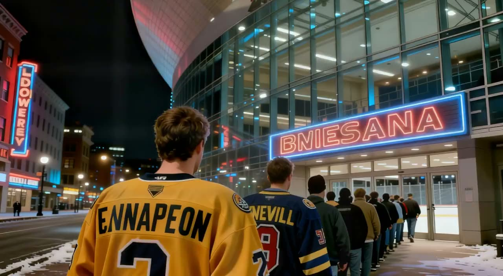

NSH 6, COL 4 at the Gaylord Entertainment Center
The night's pick of the fixtures, on tape: the clubs put 10 goals between them; both clubs are in the top eight; they are level on points.

 Colorado Avalanche were at
Colorado Avalanche were at  Nashville Predators on 2005-01-01, and it finished 6-4. The reel below is the night as Home Ice Network saw it, from the doors of the Gaylord Entertainment Center to an empty bowl.
Nashville Predators on 2005-01-01, and it finished 6-4. The reel below is the night as Home Ice Network saw it, from the doors of the Gaylord Entertainment Center to an empty bowl.
The record of it
| NSH | COL | |
|---|---|---|
| Goals | 6 | 4 |
| Shots | 23 | 27 |
| Power-play goals | 0 | 0 |
| Penalty minutes | 0 | 0 |
Nashville Predators are 21-10-4, 52 points. Colorado Avalanche are 23-12-2, 52 points.
The pictures are made, not filmed: this league is played inside a game, and no camera was there. Nobody in the reel is a particular player, and the desk names no scorer, because the record keeps none.